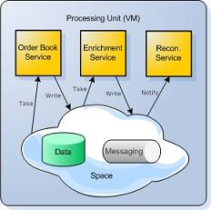
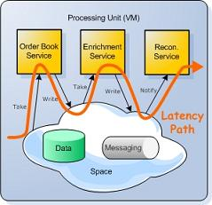
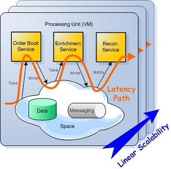
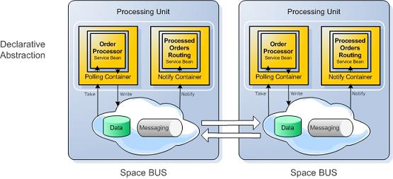
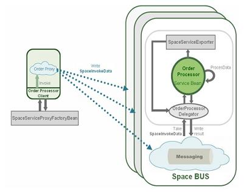
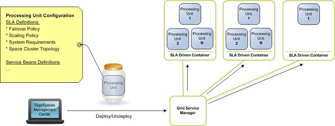

Section Summary: A Typical Space-Based Application
Overview
This section describes SBA from an application development perspective. It focuses on developing a high-throughput, event-driven, service-oriented application using GigaSpaces XAP and Space-Based Architecture.
Application Description
Let's take a trading order management application as an example, to understand Space-Based Architecture and its application to GigaSpaces XAP. It is a classic case of an application with highly demanding scalability and latency requirements, in a stateful environment.
A trading application usually consists of a data feed i.e. trade requests, which flow into the system in a standard financial format (e.g. FIX). These feeds need to be matched, with very low latency, against other trades that exist in the market. The business logic typically includes the following steps:
- Parsing and validation (transforming text format into domain objects, and validating that they conform to certain rules).
- Matching (querying the data store to find a matching trade, and executing the deal).
- Routing (routing details of the deal to interested parties).
The application needs to provide a 100% guarantee that once a transaction enters the system, it will not be lost. It also needs to keep end-to-end latency (latency from the time the system receives a trade, to the time the business process ends) to a fraction of a millisecond, and ensure that this low latency is not affected by future scaling.
Application Design
The first step in building such an application with SBA, is to define its business logic components as independent services - Enrichment Service (parsing and validation), Order Book Service (matching and execution), and Reconciliation Service (routing):

To reduce the latency overhead of communication between these services, they are all collocated in a single Virtual Machine (VM). To eliminate the network overhead of communication with the messaging and data tiers, Messaging Grid and Data Grid instances are both collocated in the same VM. All the interaction with all the services is done purely in-process, bringing I/O overhead to a minimum, in both the data and messaging layers.
This collocated unit of work (which includes business logic, messaging and data) is called a Processing Unit. Because the Processing Unit encompasses all application tiers, it represents the application's full latency path. And because everything occurs in-process, latency is reduced to an absolute minimum.

Scaling is achieved simply by adding more Processing Units and spreading the load among them. Scaling does not affect latency, because the application's complexity does not increase. Each transaction is still routed to a single Processing Unit, which handles the entire business transaction in-process, with the same minimal level of latency.

We can see that the trading application guarantees both minimal latency and linear scalability - something that would be impossible with a tier-based, best-of-breed approach (in other words, with separate products to manage business logic, data and messaging).
Application Structure
The following diagram outlines a typical architecture of an application built with OpenSpaces: 
Processing Unit
At the heart of the application is the processing unit. A processing unit represents the unit of scale and failover of an application. It is built as a self-sufficient unit that can contain all the relevant components required to process a user's transaction within the same unit. This includes:
- a messaging component required to route transactions between processing units, as well as providing a means for communication between services that are collocated within the processing unit itself.
- business logic units, which are essentially POJOs that process events delivered from the messaging component.
- a data component, that holds the state required for the business logic implementation.
The processing unit is built as an extension of the Spring application context, so the development of a processing unit looks just like the normal development of any Spring application context. In addition to the standard Spring framework, it provides specific components designed primarily to enable rapid development of SOA/EDA-based applications. These components are explained below.
Declarative Event Containers
There are basically two main types of event containers:
Event containers are used to abstract the event processing from the event source. This abstraction enables users to build their business logic with minimal binding to the underlying event source, whether it is a space-based event source, or a JMS event source, etc.
The "wiring" between the POJO service and the event handler is done in a declarative manner through a Spring configuration:
<os-events:notify-container id="eventContainer" giga-space="gigaSpace"> <os-events:notify write="true" update="true"/> <os-core:template> <bean class="org.openspaces.example.data.common.Data"> <property name="processed" value="false"/> </bean> </os-core:template> <os-events:listener> <os-events:annotation-adapter> <os-events:delegate ref="simpleListener"/> </os-events:annotation-adapter> </os-events:listener> </os-events:notify-container>
The POJO service is where the business logic is written. It is very similar to a message-driven bean, known from the J2EE framework, or to message-driven POJOs in Spring. The code snippet below is an example of what a POJO service looks like. It uses an annotation (@SpaceDataEvent) to mark the method that is triggered by a specific event.
public class DataProcessor { @SpaceDataEvent public Data processData(Data data) { data.setProcessed(true); return data; } }
The GigaSpace Core Middleware Component
The GigaSpace component is a POJO driven abstraction of the JavaSpaces specification. JavaSpaces is a service specification. It provides a distributed object exchange/coordination mechanism (which might or might not be persistent) for Java objects. It can be used to store the system state and implement distributed algorithms. In a space, all communication partners (peers) communicate by sharing states. It is an implementation of the Tuple spaces idea.
JavaSpaces is used when someone wants to achieve scalability and availability, while reducing the complexity of the overall system. Processes perform simple operations to write new objects into a space, take objects from a space, or read (make a copy of) objects from a space.
The goal behind the GigaSpace abstraction is to provide a simpler interface that fits into a POJO-driven architecture such as Spring through the following principles:
- POJO Entries - the data model in JavaSpaces is an Entry. An Entry has to inherit from a specific interface (Entry). Attributes are public, non-transient Java objects. This model is quite different from the model that was written before the POJO model, and became common by JEE frameworks such as JPA and Hibernate, which are now based on POJOs. The POJO data model is basically a Java Bean representation with annotations that extend that model with specific meta-information such as indexes definition, persistency model, etc. The new GigaSpace model uses POJO-driven Entries; defines annotations for defining indexes, persistency model, replication semantics, etc.; and follows the same logic and semantics that are used today in the JEE world. This makes the integration of Space-Based Architecture with JEE a more natural fit. Note that Entries can still be used with the GigaSpace interface.
- Declarative transactions - the JavaSpaces API uses explicit transaction semantics, in which transactions-handling is provided as an argument per method. While this model provides a finer level of granularity, it exposes more complexity to the developer. The transaction and locking semantics that are provided in the specification, support a limited set of transaction semantics. Spring uses a declarative transaction model, which is basically an implicit transaction. Users can use annotations or XML to define specific transaction/locking semantics.
- Generics support - users can use generics to avoid unnecessary casting and make their interaction with the space more type-safe.
- Overloaded methods - the GigaSpace interface uses overloaded methods, that can use defaults to reduce the amount of arguments passed in read/take/write methods.
Using the GigaSpace Component in the Context of EDA/SOA Applications
The space serves several purposes in an EDA/SOA type of application:
- Messaging Grid - in this case, the space is used as a distributed transport that enables remote and local services to send and receive objects based on their content. In a typical Space-Based Architecture, the space is used to route requests/orders from the data source to the processing unit, based on a predefined affinity-key. The affinity-key is used to route the request/order to the appropriate processing unit. Since it is optimized to run in-memory, it is used also as a means to enable the workflow between the embedded POJO services.
- In Memory Data Grid (IMDG) - in this case, the space is used as a distributed object repository, that provides in-memory access to distributed data. Data can be distributed in various topologies - partitioned and replicated are the main ones. In a typical Space-Based Architecture, the space instances are collocated within each processing unit and therefore provide local access to distributed data required by POJO services running under that processing unit. The domain model is also POJO-driven. Data objects are basically Java Beans with annotations, (which add specific metadata required by the Data Grid to mark indexed fields), the affinity-key, and whether the object should be persisted or not, as can be seen in the code snippet below:
@SpaceClass public class Data { @SpaceId public Long getId() { return this.id; } @SpaceRouting public Long getType() { return this.type; } }
- Processing Grid - a processing grid represents a particular and common use of the space for parallel transaction processing, using a master/worker pattern. In Space-Based architecture, the processing grid is implemented through a set of POJO services that serve as the workers and event containers, that trigger events from the space into and from these services. Requests/orders are processed in parallel between the different processing units, as well as within these processing units, in case there is a pool of services handling the event.
Space-Based Remoting
Space-Based Remoting allows for POJO services that are collocated within a specific processing unit to be exposed to remote clients, like any other RMI service. Spring provides a generic framework for exposing and invoking POJO-based services. OpenSpaces utilizes the Spring remoting framework to enable POJO services to expose themselves through the space, as illustrated in the diagram below:

The client uses the SpaceRemotingProxyFactoryBean to create a space-based dynamic proxy for the service. The client uses the proxy to invoke methods on the appropriate service instance. The proxy captures the invocation, and creates a generic command Entry with the information on the service-instance, the method-name, and arguments; and calls the space write operation to send the command to the service implementation, followed by a blocking take for the response.
A service that needs to be exported uses the SpaceRemotingServiceExporter to export itself. The SpaceRemotingServiceExporter creates a service-delegator listener that registers for invocation commands by calling the take method on the space. The command contains information about the instance that needs to be invoked, the method and the arguments. The delegator uses this information to invoke the appropriate method on the POJO service. If the method returns a value, it captures the value and uses the space write method to write a response Entry.
Benefits compared to RMI:
- Efficiency - unlike RMI, space-based remoting leverages the fact that the space is the network gateway, and therefore doesn't require any additional sockets or I/O resources beyond the ones that have already been allocated to the space.
- Scalability - the client stub can point to a cluster of processing units, each containing different instances of the same service for scalability. The proxy utilizes the space clustered proxy for load-balancing of the requests between processing units.
- Continuous high availability - since the client proxy doesn't point directly to a specific server but to a space proxy, it remains valid during failover or relocation of a service, i.e. - if a service fails, the command is automatically routed to the backup processing unit. The POJO service contained in this unit immediately picks up the request and responds instead of the failed service, thus enabling smooth continuation of the request during a service failure.
- Loosely coupled - a single proxy can point to a set of service instances. This provides the flexibility of invoking methods on a single service, and performing broadcast operations, i.e. invoking multiple services at the same time, or only a single service regardless of its physical location.
- Synchronous/Asynchronous invocation - a client can choose to invoke a method and wait for a result (synchronous invocation). It can also invoke a method and pick up the result at a later stage.
SLA-Driven Container
An OpenSpaces SLA Driven Container that allows you to deploy a processing unit over a dynamic pool of machines, is available through an SLA-driven container, formerly known as the Grid Service Containers - GSCs. The SLA-driven containers are Java processes that provide a hosting environment for a running processing unit. The Grid Service Manager (GSM) is used to manage the deployment of the processing unit, based on SLA. The SLA definition is part of the processing unit configuration, and is normally named pu.xml. The SLA definition defines: the number of PU instances that need to be running at a given point of time, the scaling policy, the failover policy based on CPU, and memory or application-specific measurement.

The following is a snippet taken from the example SLA definition section of the processing unit Spring configuration:
<os-sla:sla cluster-schema="partitioned-sync2backup" number-of-instances="2" number-of-backups="1" max-instances-per-vm="1"> <os-sla:monitors> <os-sla:bean-property-monitor name="Processed Data" bean-ref="dataProcessedCounter" property-name="processedDataCount" /> </os-sla:monitors> </os-sla:sla>
 Next Chapter: Database Integration
Next Chapter: Database Integration